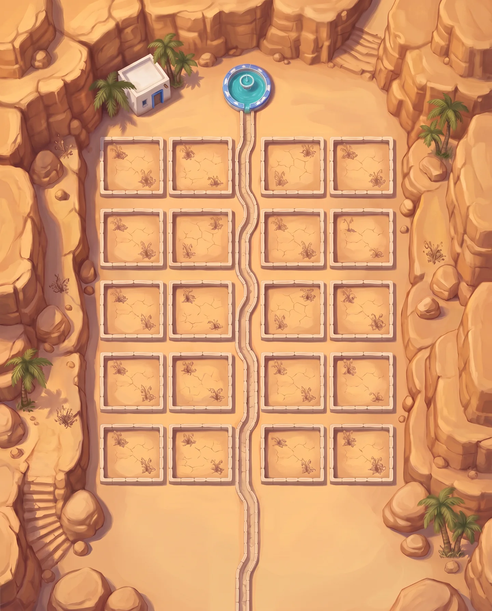
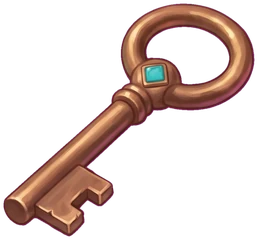
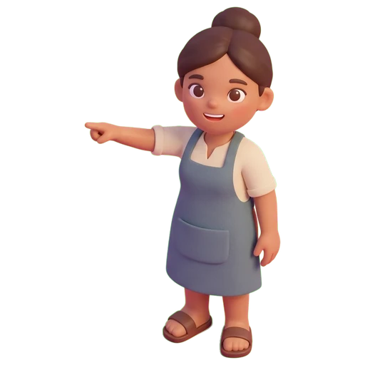
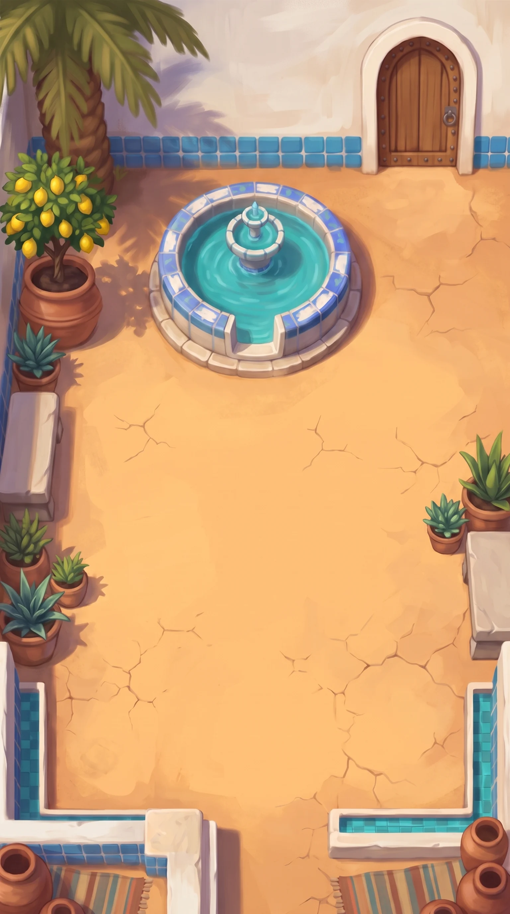

Au fil de l’eau
La vallée a retrouvé son eau

Les jardins de la source


La fontainière de la vallée
La vallée a soif…
La sécheresse a coupé l’eau. Réveillons ces jardins un à un.

Les jardins de la source
La fontainière
Tourne le conduit éclairé. Puis soulève la vanne de la fontaine.
Au fil de l’eau
La vallée a soif. Aide la fontainière à rendre l’eau à ses jardins !
Tiens l’écran droit
Une petite pause
Ton jardin est gardé. Tu le retrouveras ici.